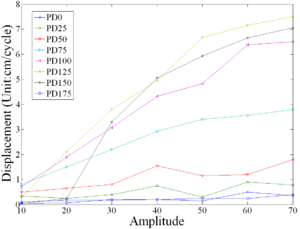
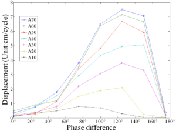
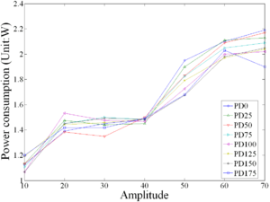
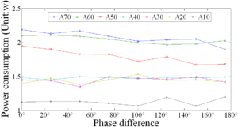
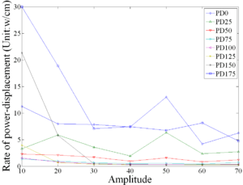
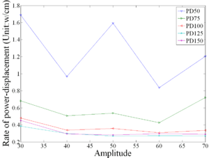
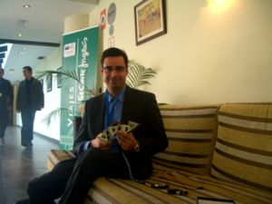
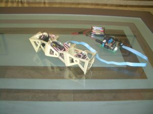
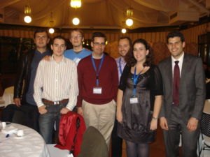

- Houxiang Zhang, Juan González-Gómez, Jianwei Zhang. "A New Application of Modular Robots on Analysis of Caterpillar-like Locomotion". Proceedings of the 2009 IEEE International Conference on Mechatronics, Malaga, Spain, 14-17 April
Abstract
Abstract— This paper presents the application of developing and employing modular robots for caterpillar-like locomotion research. Firstly an investigation on locomotion kinematics adopted by natural caterpillars is given systematically. From kinematics viewpoint, the caterpillar can be considered as a structure with pitching moving joints and attachment units in total. The kinematics locomotion model can be built with three robotic modules Cube-M in pitching-pitching connections, which is designed by us recently. We concentrate on using flexible and cheap modular robotic system for bio-inspired research and educational purposes in our international consortium. Various bio-inspired locomotion is investigated thoroughly, such as most efficient movement for power consumption, the fastest movement gaits. In the end a conclusion is given and future work is outlined.
Authors
- Houxiang Zhang, Juan González-Gómez, JianWei Zhang
- Oral presentation: Juan Gonzalez-Gomez
Download
| ICM2009-caterpillar.pdf | Paper (PDF) |
| ICM2009-caterpillar.odt | Paper in Openoffice format (ODT) |
| ICM09-caterpillar-slides.pdf | Slides, in PDF |
| ICM09-caterpillar.odp | Slides, in Openoffice format (ODP) |
Video
|
|
| Enlace directo al video en Youtube |


Experimental results
| 
Step vs Amplitude (click to enlarge) |

Step vs Phase Difference (click to enlarge) |
| 
Power vs Amplitude (click to enlarge) |

Power vs Phase Difference (click to enlarge) |
| 
Power to Step ratio vs Amplitude (click to enlarge) |

Power to Step ratio (zoom) vs Amplitude (click to enlarge) |


Cuaderno de bitácora
El congreso ICM09 se celebró en Málaga del 14 al 17 de Abril de 2009. Yo tenía que hacer dos presentaciones, una correspondiente al artículo "A New Application of Modular Robots on Analysis of Caterpillar-like Locomotion" y la otra la de "A Novel Passive Adhesion Principle and Application for an Inspired Climbing Caterpillar Robot". Yo no soy autor de este último artículo, pero Houxiang me pidió que lo expusiera yo, ya que estaría en Málaga. Así sólo tendría que asistir uno al congreso.
Tuve la suerte de que mis presentaciones fueron el mismo día, el viernes 17 y además una a continuación de la otra. Así que llegué a Málaga el Jueves 16 por la mañana, en el AVE y me fui al día siguiente por la tarde, al finalizar el congreso.
La robótica me puede, así que al final no pude resistir la tentación de llevar el prototipo Cube-M y hacer demostraciones durante mi presentación. Gracias a los Micro-osciladores, ya puedo hacer que los robots modulares sean autónomos y no necesito de un PC para hacer las demos. Todo es mucho más fácil :-)
| 
Juan Gonzalez y el robot Cube-M |

El robot oruga Cube-M |


En esta foto estamos en la cena de gala:
| 
Foto durante la cena de gala |

Links
- ICM09. IEEE International Conference on Mechatronics 2009 web page
Agradecimientos
- A Juan Machuca, por enviarme la foto de la cena de gala.